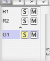

On the left side of the surface frame, a list of receivers and groups is displayed. This can be shown or hidden by dragging the vertical split pane bar that separates the table from the surface.

The table on the top displays a list of all receivers in a session. Clicking on a row will select that receivers. To extend the selection hold down the Shift or Meta key. To deselect a receiver, Meta+Click on its row. Receivers can also be selected and deselected using the pointer tool. Receivers can be created by calling the menu item File->Insert->New Receivers, and deleted by calling the menu item File->Remove->Selected Receivers. To edit the name of a receiver, go to the receiver tab of the observer palette.
The table on the bottom displays a list of all groups in a session. A group is a subset of receivers and transmitters. When no groups are created or no group is selected, the surface, timeline frame and meter display all receivers and transmitters of the session. When one or more groups are selected, only those receivers and transmitters that are part of these groups are displayed. The meaning of groups for bounce or realtime plug-ins is not defined per se and depends on the particular implementation of the plug-in.
Clicking on a row will select that group. To extend the selection hold down the Shift or Meta key. To deselect a group, Meta+Click on its row. Groups can be created by first selecting a subset of receivers and transmitters which shall be part of the new group, and then calling the menu item File->Insert->New Group from Selected Objects. To delete groups, call the menu item File->Remove->Selected Groups. To edit the name of a group or select a group's background image, go to the group tab of the observer palette.
Each group can have a separate background image. This image will be displayed on the surface, when the menu item View->Surface Shows->User Images is checked. Due do a bug, when switching groups, the surface frame needs to be resized for the images to correctly display. When multiple groups are selected, the images are superimposed which is useful when using PNG or GIF images with transparency.
The 'S' and 'M' buttons toggle the Solo and Mute flags of each receiver or group. These flags can be used by the bounce or realtime plug-ins and have no meaning in Meloncillo itself. Note that there is a built-in solo-safe mode which cannot be accessed due to a bug as of version 0.72. This will be fixed in the next version.